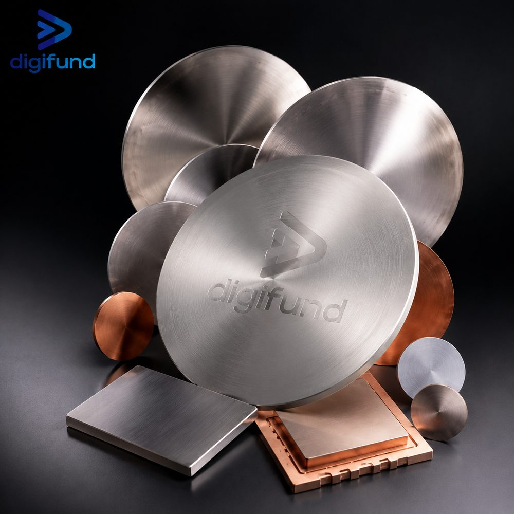
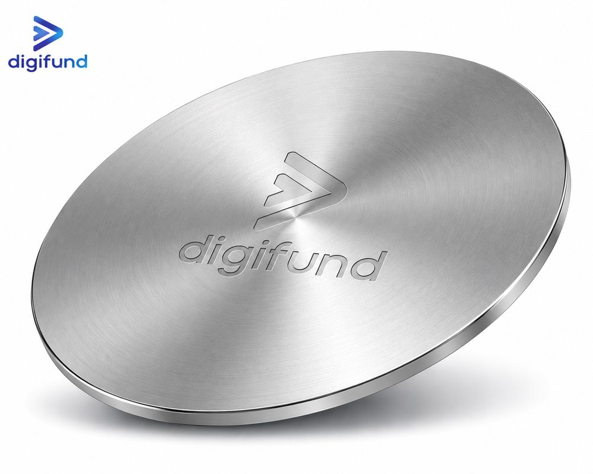

Nội dung chính
Contents
1. Danh mục bia phún xạ Digifund
1. Digifund sputtering target range
Digifund cung cấp bia phún xạ (sputtering target) cho lắng đọng màng mỏng PVD: kim loại, oxide và hợp kim, dạng tròn hoặc chữ nhật. Bảng dưới tổng hợp các dải thông số đang liệt kê trong catalog; cấu hình ngoài các giá trị này được báo giá theo yêu cầu.
Digifund supplies sputtering targets for PVD thin-film deposition: metals, oxides and alloys, in round or rectangular form. The table below summarises the ranges listed in our catalog; configurations outside these values are quoted on request.
| Thông sốParameter | Dải trong catalogCatalog range |
|---|---|
| Vật liệuMaterial | Ti, Cu, Al, Au, Ag, Cr, Ni, Mo, W, Zn, ITO, ZnO, TiO₂, SiO₂… |
| Độ tinh khiếtPurity | 99,5% ; 99,9% ; 99,99% ; 99,999%99.5% ; 99.9% ; 99.99% ; 99.999% |
| Đường kínhDiameter | 2" ; 3" ; 4" ; 6" (và bia chữ nhật)2" ; 3" ; 4" ; 6" (and rectangular targets) |
| Độ dàyThickness | 3 mm ; 5 mm ; 6 mm |
| Hình dạngShape | Tròn / Chữ nhậtRound / Rectangular |
| Đế gắn (backing)Backing plate | Cu / In (tuỳ chọn)Cu / In (optional) |

Các mã có sẵn thông số chi tiết trong catalog:
Catalog items with detailed specifications:
| MãSKU | Vật liệuMaterial | Độ tinh khiếtPurity | Đường kínhDiameter | Độ dàyThickness | Hình dạngShape |
|---|---|---|---|---|---|
| DG-ST-TI2099 | Ti (Titan)Ti (Titanium) | 99,99%99.99% | 2" | 3 mm | TrònRound |
| DG-ST-TI3099 | Ti (Titan)Ti (Titanium) | 99,99%99.99% | 3" | 5 mm | TrònRound |
| DG-ST-CU2099 | Cu (Đồng)Cu (Copper) | 99,99%99.99% | 2" | 3 mm | TrònRound |
| DG-ST-CU3099 | Cu (Đồng)Cu (Copper) | 99,99%99.99% | 3" | 5 mm | TrònRound |
| DG-ST-AL2059 | Al (Nhôm)Al (Aluminium) | 99,999%99.999% | 2" | 3 mm | TrònRound |
| DG-ST-AU2099 | Au (Vàng)Au (Gold) | 99,99%99.99% | 2" | 1 mm | TrònRound |
| DG-ST-AG2099 | Ag (Bạc)Ag (Silver) | 99,99%99.99% | 2" | 3 mm | TrònRound |
| DG-ST-CR2095 | Cr (Crom)Cr (Chromium) | 99,95%99.95% | 2" | 3 mm | TrònRound |
| DG-ST-MO2095 | Mo (Molypden)Mo (Molybdenum) | 99,95%99.95% | 2" | 3 mm | TrònRound |
| DG-ST-ITO3099 | ITO (In₂O₃:SnO₂ 90:10) | 99,99%99.99% | 3" | 5 mm | TrònRound |
| DG-ST-ZNO2099 | ZnO | 99,99%99.99% | 2" | 3 mm | TrònRound |
2. Vật liệu bốc bay: viên và dây kim loại
2. Evaporation materials: metal pellets and wire
Ngoài bia phún xạ, nhóm vật liệu màng mỏng của Digifund có vật liệu cho bốc bay nhiệt và bốc bay chùm điện tử (e-beam). Hai dạng đang liệt kê là viên kim loại (metal pellets) và dây kim loại (metal wire), báo giá theo yêu cầu.
Besides sputtering targets, Digifund's thin-film materials group includes materials for thermal and electron-beam (e-beam) evaporation. The two forms listed are metal pellets and metal wire, quoted on request.
| DạngForm | Quy trìnhProcess | Thông số nên nêu khi hỏi giáSpecs to state when asking for a quote |
|---|---|---|
| Viên kim loạiMetal pellets | Bốc bay e-beam / nhiệtE-beam / thermal evaporation | Vật liệu, độ tinh khiết, kích thước viên (đường kính × dài) vừa với nồi (crucible) hoặc liner, khối lượngMaterial, purity, pellet size (diameter × length) to suit your crucible or liner, weight |
| Dây kim loạiMetal wire | Bốc bay nhiệt (thuyền, sợi đốt)Thermal evaporation (boat, filament) | Vật liệu, độ tinh khiết, đường kính dây, chiều dài hoặc khối lượngMaterial, purity, wire diameter, length or weight |
Bốc bay hay phún xạ phù hợp hơn tuỳ màng và thiết bị bạn đang có; nếu chưa chắc, hãy mô tả màng cần tạo khi gửi yêu cầu.
Whether evaporation or sputtering suits you better depends on the film and the equipment you have; if unsure, describe the film you need when you send your request.
3. Độ tinh khiết: 2N5, 3N, 4N, 5N, 6N nghĩa là gì?
3. Purity grades: what 2N5, 3N, 4N, 5N and 6N mean
Ký hiệu "N" đếm số chữ số 9 trong phần trăm độ tinh khiết. Mỗi bậc N giảm tổng tạp chất khoảng 10 lần, và giá thường tăng rõ theo từng bậc.
The "N" notation counts the nines in the purity percentage. Each N step cuts total impurities by about ten times, and price usually climbs noticeably with each step.
| CấpGrade | Độ tinh khiếtPurity | Tổng tạp chất tối đaMaximum total impurities |
|---|---|---|
| 2N5 | 99,5%99.5% | 5.000 ppm5,000 ppm |
| 3N | 99,9%99.9% | 1.000 ppm1,000 ppm |
| 3N5 | 99,95%99.95% | 500 ppm |
| 4N | 99,99%99.99% | 100 ppm |
| 5N | 99,999%99.999% | 10 ppm |
| 6N | 99,9999%99.9999% | 1 ppm |
Catalog của Digifund liệt kê từ 99,5% đến 99,999%; dòng 6N chỉ để tham chiếu. Hai điểm cần kiểm tra trên phiếu phân tích: độ tinh khiết thường tính trên cơ sở kim loại, không gồm khí như O, N, C, H; và phương pháp đo (ví dụ GDMS hay ICP) quyết định những nguyên tố nào thực sự được kiểm.
Digifund's catalog lists 99.5% to 99.999%; the 6N row is for reference only. Two points to check on the analysis sheet: purity is usually stated on a metals basis, excluding gases such as O, N, C and H; and the method (for example GDMS or ICP) determines which elements were actually measured.
Chọn cấp theo ứng dụng, không theo nguyên tắc "càng cao càng tốt": lớp bám dính hay lớp phủ thử nghiệm thường dùng 3N–3N5, còn tiếp xúc điện, màng bán dẫn và quang học nhạy tạp chất mới cần 4N–5N.
Choose the grade by application rather than "higher is always better": adhesion layers or trial coatings often use 3N–3N5, while electrical contacts and impurity-sensitive semiconductor or optical films need 4N–5N.
4. Bia phẳng hay bia ống (planar vs rotary)
4. Planar or rotary targets
- Bia phẳng tròn — dạng phổ biến nhất cho súng magnetron trong phòng lab và R&D, gọi theo đường kính (2", 3", 4", 6").
- Bia phẳng chữ nhật — dùng cho cathode chữ nhật của máy phủ in-line hoặc diện tích lớn; đặt theo dài × rộng × dày.
- Bia ống (rotary) — ống quay quanh nam châm cố định nên mòn đều hơn và tận dụng vật liệu cao hơn nhiều so với bia phẳng; chỉ dùng được trên hệ có cathode quay, thường là dây chuyền phủ kính hoặc pin mặt trời.
- Round planar targets — the most common form for magnetron guns in labs and R&D, named by diameter (2", 3", 4", 6").
- Rectangular planar targets — for rectangular cathodes on in-line or large-area coaters; ordered by length × width × thickness.
- Rotary (cylindrical) targets — the tube rotates around a fixed magnet, so it erodes more evenly and uses far more of its material than a planar target; it only fits systems with a rotary cathode, typically glass or solar coating lines.
Catalog hiện liệt kê bia tròn và chữ nhật. Nếu hệ của bạn dùng bia ống, hãy gửi bản vẽ để Digifund kiểm tra khả năng cung cấp. Vì sao bia phẳng mòn thành rãnh và tận dụng thấp được giải thích trong bài bia phún xạ & công nghệ màng mỏng.
The catalog currently lists round and rectangular targets. If your system uses rotary targets, send the drawing so Digifund can check supply. Why planar targets erode into a groove and use material poorly is explained in sputtering targets & thin-film technology.
5. Gắn đế (backing plate) và bonding
5. Backing plates and bonding
Digifund có tuỳ chọn đế Cu và gắn bằng In. Quyết định có gắn đế hay không dựa trên vật liệu và cách súng làm mát bia:
Digifund offers Cu backing plates and In bonding as options. Whether to bond depends on the material and on how your gun cools the target:
- Kim loại dẻo (Cu, Al, Ti…) — thường dùng được dạng không đế (monolithic) nếu súng kẹp trực tiếp và làm mát tốt.
- Gốm và oxide (ITO, ZnO, TiO₂, SiO₂) — giòn, dẫn nhiệt kém, dễ nứt do sốc nhiệt; nên gắn lên đế Cu để đỡ cơ học và tản nhiệt.
- Kim loại quý dạng mỏng (ví dụ Au 1 mm) — bia mỏng giúp tiết kiệm vật liệu, nhưng thường cần đế để đủ cứng và đủ độ dày lắp vào súng.
- Ductile metals (Cu, Al, Ti…) — often usable unbonded (monolithic) if the gun clamps the target directly and cools it well.
- Ceramics and oxides (ITO, ZnO, TiO₂, SiO₂) — brittle, poor heat conductors and prone to thermal-shock cracking; bond them to a Cu backing plate for support and heat removal.
- Thin precious-metal targets (for example 1 mm Au) — thin targets save material but often need a backing plate for stiffness and to reach the thickness the gun expects.
Khi chọn bia có đế, tổng độ dày (bia + lớp bonding + đế) phải nằm trong dải kẹp của súng. Ưu nhược điểm của từng kiểu bonding đã có trong bài kiến thức về bia phún xạ.
With a bonded target, the total thickness (target + bond layer + backing plate) must sit within the gun's clamping range. The pros and cons of each bonding method are covered in our sputtering target article.
6. Kích thước bia phải khớp súng phún xạ
6. Target size must match the sputtering gun
- Đường kính theo cathode. Súng 2" nhận bia 2", súng 3" nhận bia 3". Một số súng dùng cỡ hệ mét gần giống (ví dụ 50 mm thay vì 50,8 mm), nên hãy đo bia cũ hoặc xem tài liệu súng.
- Độ dày theo dải của súng. Bia quá dày không kẹp được hoặc làm yếu từ trường trên bề mặt; quá mỏng thì nhanh phải thay.
- Vật liệu từ tính (Ni, Fe, Co) cần bia mỏng hơn. Bia từ tính "hút" bớt từ trường của magnetron, nên thường phải mỏng hơn bia thường hoặc dùng súng nam châm mạnh.
- Hệ lớn hơn, bia lớn hơn. Bia 4" và 6" hay đi với hệ phủ đế lớn hơn; muốn chọn hoặc nâng cấp hệ phún xạ, xem thiết bị phòng sạch & hệ phún xạ.
- Diameter follows the cathode. A 2" gun takes a 2" target, a 3" gun a 3" target. Some guns use a close metric size (for example 50 mm instead of 50.8 mm), so measure your old target or check the gun manual.
- Thickness within the gun's range. A target that is too thick will not clamp or weakens the magnetic field at the surface; too thin and it needs replacing soon.
- Magnetic materials (Ni, Fe, Co) need thinner targets. A magnetic target shunts the magnetron's field, so it usually has to be thinner than a standard target or run on a strong-magnet gun.
- Larger systems, larger targets. 4" and 6" targets usually go with systems coating larger substrates; to choose or upgrade a sputtering system, see cleanroom equipment & sputtering systems.
7. Thông số cần gửi để nhận báo giá
7. What to send for a quote
Gửi đủ các thông tin dưới đây để báo giá đúng ngay lần đầu:
Send the details below to get an accurate quote the first time:
- Vật liệu và thành phần (với hợp kim hoặc oxide pha trộn, ghi tỉ lệ, ví dụ ITO In₂O₃:SnO₂ 90:10).
- Độ tinh khiết yêu cầu (ví dụ 99,99%).
- Hình dạng và kích thước: đường kính hoặc dài × rộng, độ dày, dung sai.
- Có cần đế không: không đế, đế Cu, gắn In; kèm bản vẽ đế nếu có.
- Hãng và model hệ phún xạ hoặc súng, nguồn DC hay RF — xem cách chọn DC/RF theo vật liệu.
- Số lượng, tài liệu cần kèm (ví dụ phiếu phân tích) và thời điểm cần hàng.
- Material and composition (for alloys or mixed oxides, state the ratio, e.g. ITO In₂O₃:SnO₂ 90:10).
- Required purity (e.g. 99.99%).
- Shape and dimensions: diameter or length × width, thickness, tolerances.
- Backing: unbonded, Cu backing plate, In bonding; attach the backing drawing if you have one.
- Make and model of the sputtering system or gun, DC or RF power — see how to choose DC or RF by material.
- Quantity, documents you need (e.g. an analysis sheet) and when you need the goods.
8. Nhận hàng, bảo quản và lắp đặt
8. Receiving, storage and installation
- Kiểm tra bao bì và bề mặt bia khi nhận; với bia gốm, tìm vết nứt hoặc mẻ cạnh.
- Đeo găng sạch, không chạm tay vào mặt phún xạ; dầu và muối từ da sẽ đi vào màng.
- Bảo quản trong túi kín gốc (hút chân không hoặc khí trơ) ở nơi khô; để túi về nhiệt độ phòng trước khi mở để tránh đọng ẩm.
- Giữ nhãn và số lô để truy vết khi màng có vấn đề.
- Lắp đúng mô-men kẹp, bảo đảm tiếp xúc tốt với mặt làm mát; với bia gốm, tăng công suất từ từ.
- Phún xạ làm sạch (pre-sputter) với màn chắn đóng trước lần phủ đầu để loại lớp oxide bề mặt.
- Inspect the packaging and target surface on arrival; for ceramic targets, look for cracks or chipped edges.
- Wear clean gloves and never touch the sputtering face; skin oils and salts end up in the film.
- Store in the original sealed bag (vacuum or inert gas) in a dry place; let the bag reach room temperature before opening to avoid condensation.
- Keep the label and lot number so you can trace problems in the film.
- Mount with the correct clamping torque and good contact to the cooled surface; ramp power up slowly on ceramic targets.
- Pre-sputter with the shutter closed before the first deposition to remove the surface oxide.
Câu hỏi thường gặp
Frequently asked questions
Digifund có bán bia phún xạ tại Việt Nam không?Does Digifund sell sputtering targets in Vietnam?
Có. Digifund cung cấp bia phún xạ kim loại, oxide và hợp kim như Ti, Cu, Al, Au, Ag, Cr, Mo, ITO và ZnO, độ tinh khiết 99,5% đến 99,999%, đường kính 2" đến 6" hoặc dạng chữ nhật, tuỳ chọn đế Cu hoặc gắn In. Gửi thông số để nhận báo giá.
Yes. Digifund supplies metal, oxide and alloy sputtering targets such as Ti, Cu, Al, Au, Ag, Cr, Mo, ITO and ZnO, at 99.5% to 99.999% purity, 2" to 6" diameter or rectangular, with optional Cu backing or In bonding. Send your specifications for a quote.
Bia 4N và 5N khác nhau thế nào?What is the difference between 4N and 5N targets?
4N là 99,99%, tổng tạp chất tối đa khoảng 100 ppm; 5N là 99,999%, khoảng 10 ppm. 5N cần cho màng nhạy tạp chất như tiếp xúc điện hay màng bán dẫn; với lớp bám dính hoặc phủ thử nghiệm, cấp thấp hơn thường đủ và rẻ hơn.
4N is 99.99%, with total impurities up to about 100 ppm; 5N is 99.999%, about 10 ppm. 5N is needed for impurity-sensitive films such as electrical contacts or semiconductor layers; for adhesion layers or trial coatings a lower grade is usually enough and cheaper.
Cần gửi thông tin gì để báo giá bia phún xạ?What information is needed to quote a sputtering target?
Vật liệu và thành phần, độ tinh khiết, hình dạng và kích thước (đường kính hoặc dài × rộng, độ dày), yêu cầu đế hoặc bonding, model súng phún xạ, nguồn DC hay RF, số lượng và thời điểm cần hàng.
Material and composition, purity, shape and dimensions (diameter or length × width, thickness), backing or bonding requirement, sputtering gun model, DC or RF power, quantity and when you need the goods.
Cần báo giá bia phún xạ?
Need a sputtering target quote?
Gửi vật liệu, độ tinh khiết, kích thước, yêu cầu đế và model súng phún xạ; đội ngũ kỹ thuật Digifund sẽ kiểm tra cấu hình và gửi báo giá.
Send the material, purity, dimensions, backing requirement and sputtering gun model; Digifund's technical team will check the configuration and send you a quote.
Gửi yêu cầu báo giáRequest a quote Xem vật liệu chế tạo bán dẫnView fabrication materials